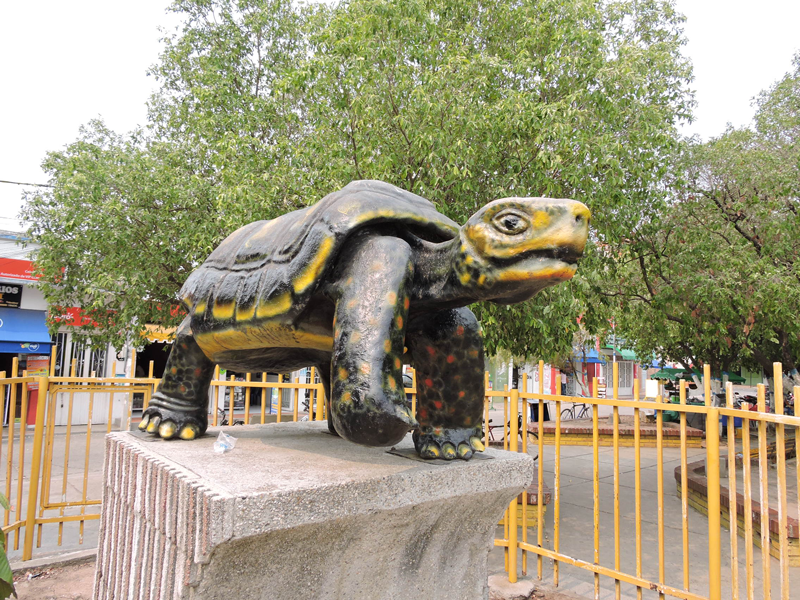

Inicio
Solicitud

AGUACHICA CESAR
DIRECTORIO
Aguachica es un municipio del departamento de Cesar, Colombia, ubicado entre el valle interandino del Magdalena
Medio y la Serranía de los Motilones. Es el segundo municipio más poblado del departamento e importante centro
ganadero y comercial del suroriente del Caribe colombiano.
Aguachica está ubicada al Sur del Departamento del Cesar, a los 8º18'45'' de latitud Norte y 73º37'37'' de
longitud Oeste del meridiano de Greenwich, entre la cordillera Oriental y el valle del Rio Magdalena, a una
distancia de 301 Kilometros de Valledupar, la capital del Cesar.
Su extensión territorial es de 876.26
Kilometros cuadrados que ocupa el 3.8% de la superficie del Departamento.
Limita por el norte con el municipio de la Gloria (Cesar), El Carmen (Norte de Santander), por el este con Rio
de Oro (Cesar), por el sur con Rio de Oro, San Martin (Cesar) Y Puerto Wilches (Santander), por el oeste con
Gamarra (Cesar) y Morales (Bolivar).